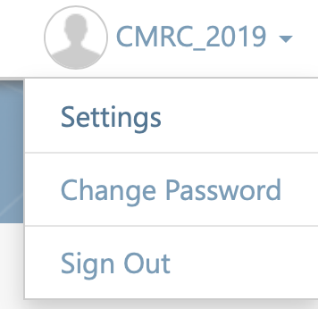
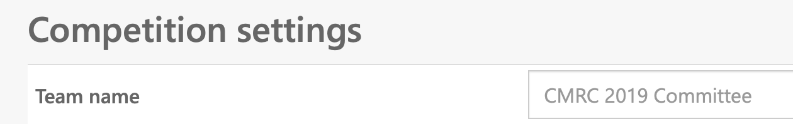
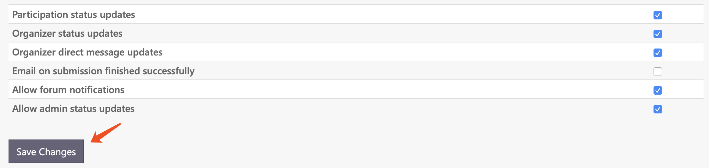
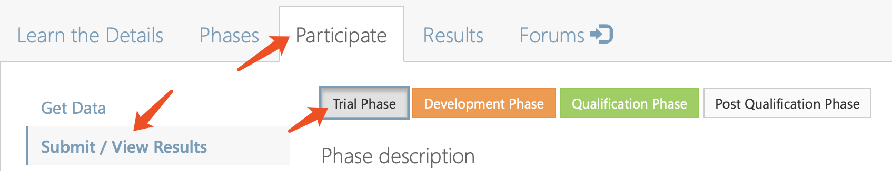
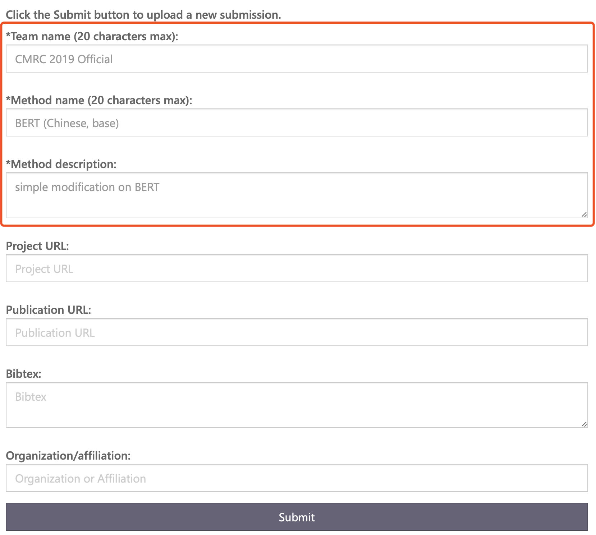
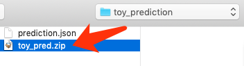
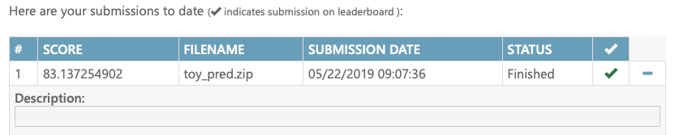
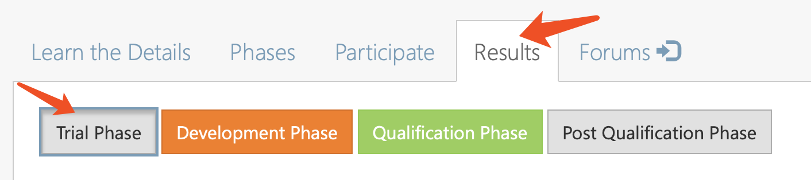
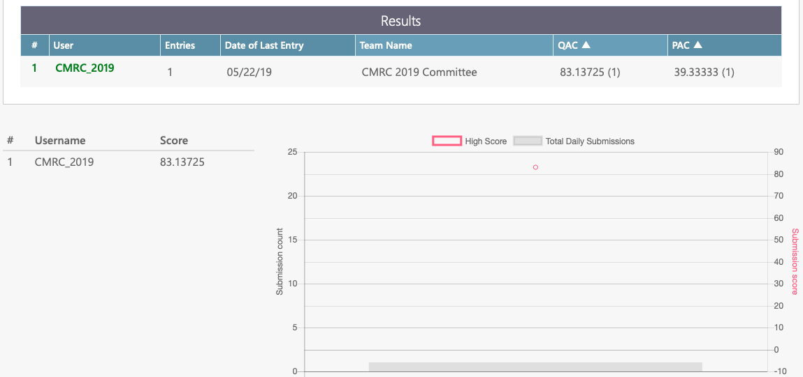

资格赛提交流程
资格赛提交网址
重要说明
- 资格赛阶段使用的是CodaLab Competition平台。
- 请使用评测注册时填报的codalab账号进行结果提交，非注册人员无资格提交结果
- 试验集、开发集结果仅用于展示，不纳入资格获取的因素
- 所有结果均强制显示在排行榜中，请充分考虑后再提交
准备工作
在提交结果之前，请完成下述准备工作（仅需一次）。
- 打开CodaLab Competition，登陆后点击右上角菜单中的“Settings”

- 在Team name里填写队伍名

- 下方的复选框请按需自行选择，建议按照下图进行设置

提交流程（试验集、开发集、资格集均一致）
请参赛队伍按照如下步骤提交结果。前期熟悉流程的时候建议使用Trial Phase来练习，避免消耗其他阶段的提交次数。
准备预测文件
预测文件格式（json格式，key：context_id，value：句子序号list）：
{
'TRIAL_00001': [4,2,1,3,0],
'TRIAL_00002': [2,1,0],
...
'TRIAL_00010': [0,2,1,5,4,3]
}
注意：
-
若某一个篇章输出的答案数量不足或超过原文问题数（即空缺的数量）会造成准确率下降
-
若模型对某个问题无法给出答案，请输出’-1’，避免本篇章内其他答案也因错位导致答错
线下测试
由于线上线下测试脚本均为官方评测脚本cmrc2019_evaluate.py，请务必先在线下测试无误后再提交到线上。
> python cmrc2019_evaluate.py cmrc2019_trial.json trial_predictions.json
结果：
FILE: predictions.json
QAC: 64.6276595745
PAC: 10.7913669065
TOTAL: 1504
SKIP: 0
填写在线提交表单
依次点击Participate -> Submit / View Results，并选择需要提交的集合（Trial/Dev/Qualify)

填写提交信息，主要填写前两项（队伍名，模型名），第三项可简单填写

点击submit，弹出文件选择框，选择要提交的文件（包含json文件的zip压缩包）

注意：由于平台限制，请将模型输出的json文件打包成zip文件。该压缩包内仅包含一个json文件。MAC系统请勿直接使用系统自带的压缩，会添加额外的文件夹（__MACOSX）进去。请使用命令行或者其他压缩工具，避免加入额外的文件夹。
等待运行结果
提交完成后会添加到运行列表中，待运行完毕后状态会变为Finished，如下图所示。
右侧的SCORE显示的是QAC（问题准确率）指标。

查看榜单
资格赛的所有结果（Trial/Dev/Qualify）均会强制更新到榜单中。
通过Results页面可查看最新的排行榜。

排行榜中显示信息：提交人，尝试次数，提交日期，所在队伍，QAC，PAC

提交次数限制
我们为每个评测阶段限制了单日和全局提交次数限制，请参考如下表格。
| 阶段 | 目的 | 单日限制 | 全局限制 |
| 试验阶段（即日~6月9日） | 参赛者熟悉CodaLab Competition平台 | 999 | 999 |
| 开发阶段（6月10日~7月31日） | 正式开发调整评测系统 | 10 | 100 |
| 资格获取阶段（8月1日~8月7日） | 参赛者提交资格集预测结果 | 10 | 10 |
说明：
-
由于决赛阶段是由资格赛的前十名组成，且需要提交系统代码（不在CodaLab Competition平台），故不存在上述限制。
-
请各参赛队伍合理利用上述提交限制，尤其是资格获取阶段，仅提供10次提交机会。
问题反馈
如有任何问题请与CMRC 2019评测委员会联系 cmrc2019 [at] 126 [dot] com
同时也可在CodaLab Competition中的在线论坛进行反馈。